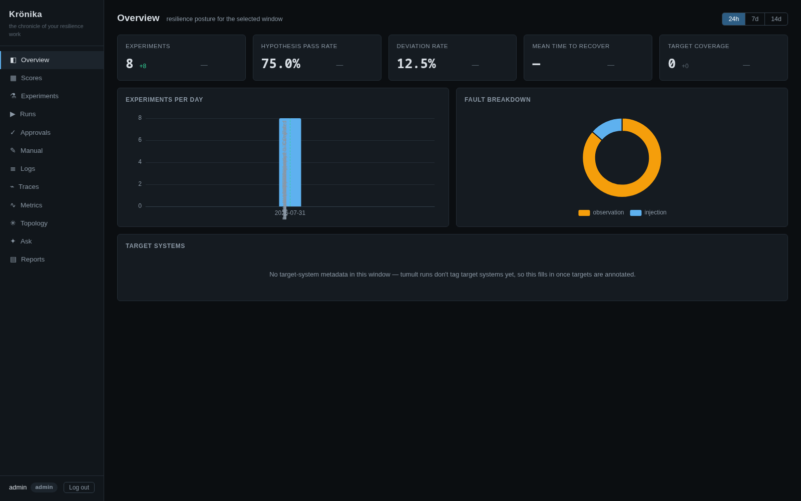
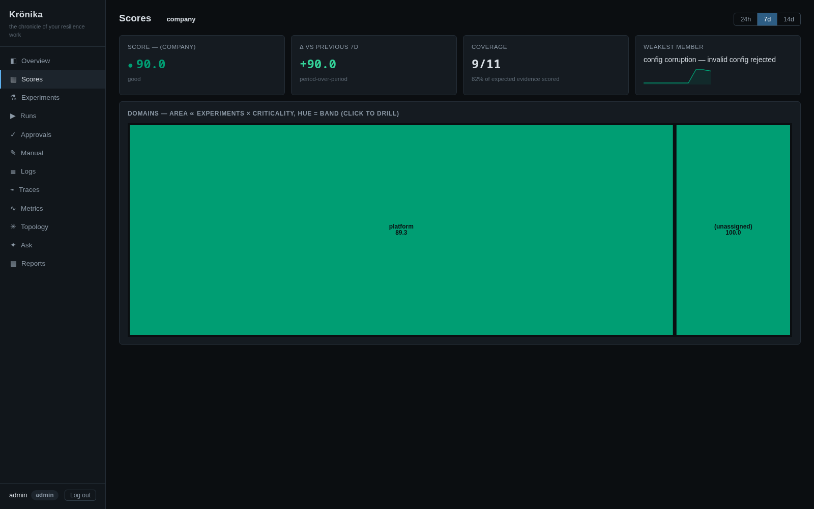
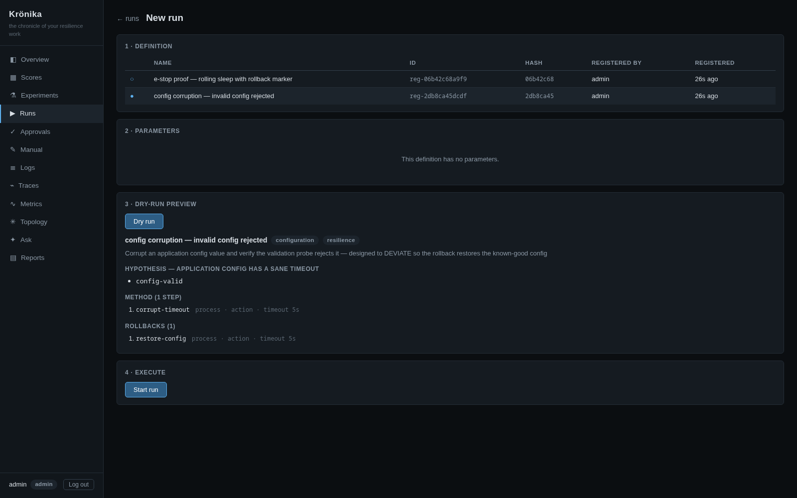
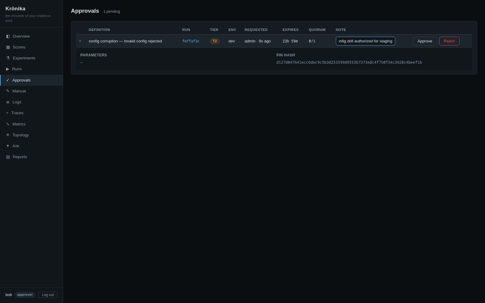
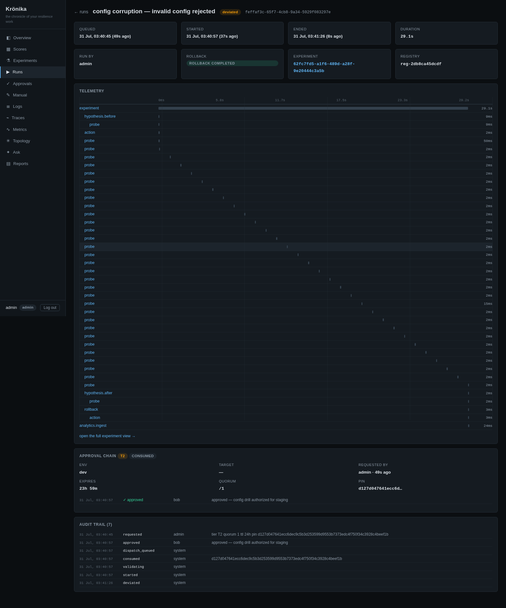
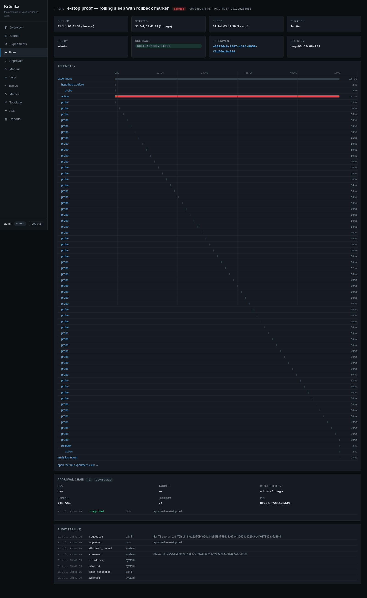
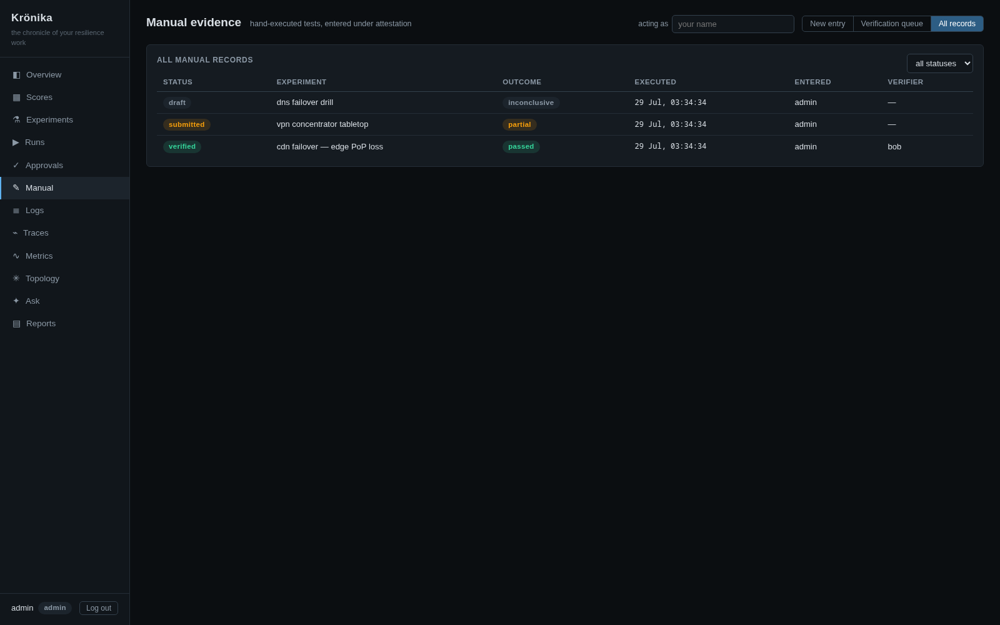
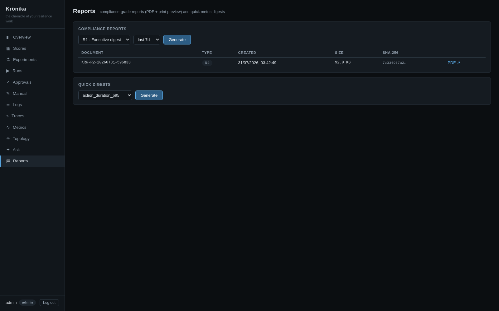

<style>
  /* Override just-the-docs defaults for landing page */
  .main-content { max-width: 100%; padding: 0; }
  .side-bar { display: none; }
  @media (min-width: 66.5rem) { .main-content { margin-left: 0; } }

  :root {
    --copper: #c87533;
    --copper-light: #e89a4f;
    --slate: #1a1a2e;
    --slate-light: #16213e;
    --slate-lighter: #0f3460;
    --text: #e0e0e0;
    --text-muted: #8892b0;
    --bg: #0a0a1a;
    --card-bg: #111126;
    --border: #1e1e3a;
  }

  /* ── Hero ──────────────────────────────────────────── */
  .hero {
    background: linear-gradient(135deg, var(--bg) 0%, var(--slate) 50%, var(--slate-light) 100%);
    padding: 4rem 2rem 3rem;
    text-align: center;
    border-bottom: 1px solid var(--border);
  }
  .hero-logo { max-width: 120px; margin-bottom: 1.5rem; }
  .hero h1 {
    font-size: 3rem; font-weight: 800; color: #fff;
    margin: 0 0 0.5rem; letter-spacing: -0.02em;
  }
  .hero h1 span { color: var(--copper); }
  .hero .tagline {
    font-size: 1.25rem; color: var(--text-muted);
    max-width: 700px; margin: 0 auto 2rem; line-height: 1.6;
  }

  /* ── Install box ──────────────────────────────────── */
  .install-box {
    background: var(--card-bg); border: 1px solid var(--border);
    border-radius: 8px; padding: 1rem 1.5rem;
    max-width: 620px; margin: 0 auto 1.5rem;
    font-family: 'SF Mono', 'Fira Code', 'Consolas', monospace;
    font-size: 0.95rem; color: var(--copper-light);
    display: flex; align-items: center; justify-content: space-between;
    cursor: pointer; transition: border-color 0.2s;
  }
  .install-box:hover { border-color: var(--copper); }
  .install-box .prompt { color: var(--text-muted); margin-right: 0.5rem; }
  .install-box .copy-hint {
    color: var(--text-muted); font-size: 0.75rem;
    font-family: -apple-system, sans-serif;
  }

  .hero-buttons { margin-top: 1.5rem; }
  .hero-buttons a {
    display: inline-block; padding: 0.75rem 2rem;
    border-radius: 6px; font-weight: 600; font-size: 1rem;
    text-decoration: none; margin: 0 0.5rem 0.5rem;
    transition: all 0.2s;
  }
  .btn-primary-custom {
    background: var(--copper); color: #fff;
  }
  .btn-primary-custom:hover { background: var(--copper-light); color: #fff; }
  .btn-secondary-custom {
    background: transparent; color: var(--text);
    border: 1px solid var(--border);
  }
  .btn-secondary-custom:hover { border-color: var(--copper); color: var(--copper-light); }

  /* ── Banner ───────────────────────────────────────── */
  .banner {
    max-width: 900px; margin: 2rem auto 0;
    border-radius: 12px; overflow: hidden;
    box-shadow: 0 8px 32px rgba(0,0,0,0.4);
  }
  .banner img { width: 100%; display: block; }

  /* ── Stats bar ────────────────────────────────────── */
  .stats {
    display: flex; justify-content: center; gap: 3rem;
    padding: 2rem; background: var(--card-bg);
    border-bottom: 1px solid var(--border);
    flex-wrap: wrap;
  }
  .stat { text-align: center; }
  .stat .num { font-size: 2rem; font-weight: 800; color: var(--copper); }
  .stat .label { font-size: 0.85rem; color: var(--text-muted); text-transform: uppercase; letter-spacing: 0.05em; }

  /* ── Features grid ────────────────────────────────── */
  .features {
    max-width: 1100px; margin: 0 auto;
    padding: 3rem 2rem;
    display: grid; grid-template-columns: repeat(auto-fit, minmax(300px, 1fr));
    gap: 1.5rem;
  }
  .feature-card {
    background: var(--card-bg); border: 1px solid var(--border);
    border-radius: 10px; padding: 1.5rem;
    transition: border-color 0.2s, transform 0.2s;
  }
  .feature-card:hover { border-color: var(--copper); transform: translateY(-2px); }
  .feature-card h3 {
    font-size: 1.1rem; color: #fff; margin: 0 0 0.5rem;
    display: flex; align-items: center; gap: 0.5rem;
  }
  .feature-card .icon { font-size: 1.3rem; }
  .feature-card p { color: var(--text-muted); font-size: 0.9rem; line-height: 1.6; margin: 0; }

  /* ── Terminal demo ────────────────────────────────── */
  .demo-section {
    max-width: 800px; margin: 0 auto; padding: 2rem 2rem 3rem;
  }
  .demo-section h2 { text-align: center; color: #fff; margin-bottom: 1.5rem; }
  .terminal {
    background: #0d1117; border: 1px solid var(--border);
    border-radius: 10px; overflow: hidden;
    box-shadow: 0 4px 24px rgba(0,0,0,0.3);
  }
  .terminal-bar {
    background: #161b22; padding: 0.5rem 1rem;
    display: flex; align-items: center; gap: 6px;
  }
  .terminal-dot { width: 12px; height: 12px; border-radius: 50%; }
  .terminal-dot.red { background: #ff5f57; }
  .terminal-dot.yellow { background: #febc2e; }
  .terminal-dot.green { background: #28c840; }
  .terminal-body {
    padding: 1.25rem; font-family: 'SF Mono', 'Fira Code', monospace;
    font-size: 0.85rem; line-height: 1.7; color: var(--text);
    overflow-x: auto;
  }
  .terminal-body .prompt-sign { color: var(--copper); }
  .terminal-body .cmd { color: #fff; }
  .terminal-body .output { color: var(--text-muted); }
  .terminal-body .success { color: #28c840; }
  .terminal-body .info { color: #58a6ff; }

  /* ── Architecture ─────────────────────────────────── */
  .arch-section {
    max-width: 900px; margin: 0 auto; padding: 2rem;
    text-align: center;
  }
  .arch-section h2 { color: #fff; margin-bottom: 1.5rem; }
  .arch-section img {
    max-width: 100%; border-radius: 10px;
    box-shadow: 0 4px 24px rgba(0,0,0,0.3);
  }

  /* ── Screenshot gallery ───────────────────────────── */
  .shots {
    max-width: 1100px; margin: 0 auto; padding: 0 2rem 3rem;
    display: grid; grid-template-columns: repeat(auto-fit, minmax(480px, 1fr));
    gap: 1.5rem;
  }
  .shot-card {
    background: var(--card-bg); border: 1px solid var(--border);
    border-radius: 10px; overflow: hidden;
    transition: border-color 0.2s, transform 0.2s;
  }
  .shot-card:hover { border-color: var(--copper); transform: translateY(-2px); }
  .shot-card img { width: 100%; display: block; }
  .shot-card .caption { padding: 0.9rem 1.1rem; color: var(--text-muted); font-size: 0.85rem; line-height: 1.5; }
  .shot-card .caption b { color: #fff; display: block; font-size: 0.95rem; margin-bottom: 0.2rem; }

  /* ── CTA ──────────────────────────────────────────── */
  .cta {
    text-align: center; padding: 3rem 2rem;
    background: linear-gradient(135deg, var(--slate-light), var(--slate));
    border-top: 1px solid var(--border);
  }
  .cta h2 { color: #fff; font-size: 1.8rem; margin-bottom: 1rem; }
  .cta p { color: var(--text-muted); margin-bottom: 1.5rem; max-width: 500px; margin-left: auto; margin-right: auto; }

  /* ── Footer ───────────────────────────────────────── */
  .landing-footer {
    text-align: center; padding: 2rem;
    color: var(--text-muted); font-size: 0.85rem;
    border-top: 1px solid var(--border);
  }
  .landing-footer a { color: var(--copper-light); text-decoration: none; }
  .landing-footer a:hover { text-decoration: underline; }
  .footer-links { display: flex; justify-content: center; gap: 2rem; margin-bottom: 1rem; flex-wrap: wrap; }
</style>

<!-- ════════════════════════════════════════════════════ -->
<!-- Hero                                                 -->
<!-- ════════════════════════════════════════════════════ -->
<section class="hero">
  
  <h1>Embrace the <span>Tumult</span></h1>
  <p class="tagline">
    Rust-native chaos engineering. GameDay orchestration with resilience scoring.
    DORA/NIS2 compliance mapping. MCP server for agent fleets.
    Every result flows into DuckDB analytics — queryable, exportable, audit-ready.
  </p>

  <div class="install-box" onclick="navigator.clipboard.writeText('curl -sSL https://raw.githubusercontent.com/mwigge/tumult/main/install.sh | sh')">
    <div>
      <span class="prompt">$</span>
      curl -sSL https://raw.githubusercontent.com/mwigge/tumult/main/install.sh | sh
    </div>
    <span class="copy-hint">click to copy</span>
  </div>

  <div class="install-box" onclick="navigator.clipboard.writeText('docker pull ghcr.io/mwigge/tumult:latest')" style="max-width: 480px;">
    <div>
      <span class="prompt">$</span>
      docker pull ghcr.io/mwigge/tumult:latest
    </div>
    <span class="copy-hint">click to copy</span>
  </div>

  <div class="hero-buttons">
    <a href="/guides/experiment-format.html" class="btn-primary-custom">Get Started</a>
    <a href="https://github.com/mwigge/tumult" class="btn-secondary-custom">GitHub</a>
    <a href="/blog/" class="btn-secondary-custom">Blog</a>
  </div>

  <div class="banner">
    
  </div>
</section>

<!-- ════════════════════════════════════════════════════ -->
<!-- Stats                                                -->
<!-- ════════════════════════════════════════════════════ -->
<section class="stats">
  <div class="stat"><div class="num">1,300+</div><div class="label">Unit Tests</div></div>
  <div class="stat"><div class="num">40</div><div class="label">MCP Tools</div></div>
  <div class="stat"><div class="num">16</div><div class="label">Plugins</div></div>
  <div class="stat"><div class="num">91</div><div class="label">Chaos Actions</div></div>
  <div class="stat"><div class="num">0</div><div class="label">Unsafe Blocks (production code)</div></div>
  <div class="stat"><div class="num">7</div><div class="label">Compliance Frameworks</div></div>
</section>

<!-- ════════════════════════════════════════════════════ -->
<!-- Features                                             -->
<!-- ════════════════════════════════════════════════════ -->
<section class="features">
  <div class="feature-card">
    <h3><span class="icon">⚡</span> Single Binary</h3>
    <p>One static binary — no Python, no runtime dependencies. Pre-built for macOS (x86_64/aarch64) and Linux (x86_64 gnu/musl, aarch64 musl). Copy it to your PATH and run experiments.</p>
  </div>
  <div class="feature-card">
    <h3><span class="icon">📡</span> Native OpenTelemetry</h3>
    <p>Every experiment emits real OTel spans across SSH, Kubernetes, plugins, baselines, analytics, and MCP dispatch. Traces appear in Jaeger, SigNoz, or any OTLP backend — no configuration.</p>
  </div>
  <div class="feature-card">
    <h3><span class="icon">🔍</span> Embedded Analytics</h3>
    <p>Journals flow through Apache Arrow into DuckDB. SQL over your chaos history, export to Parquet, trend analysis across hundreds of runs. The data pipeline is built in, not bolted on.</p>
  </div>
  <div class="feature-card">
    <h3><span class="icon">🔌</span> 16 Plugins, 91 Actions</h3>
    <p>PostgreSQL, MySQL, Redis, Kafka, Docker, Podman, Pumba network chaos, Kubernetes, SSH remote execution, userspace TCP chaos proxy, CPU/memory/IO stress. Write your own in any language — just scripts + a manifest.</p>
  </div>
  <div class="feature-card">
    <h3><span class="icon">📋</span> Regulatory Compliance</h3>
    <p>Map experiments to DORA (EU 2022/2554), NIS2, PCI-DSS 4.0, ISO 22301, ISO 27001, SOC 2, and Basel III. Journals are audit artifacts. Evidence reports generated from data.</p>
  </div>
  <div class="feature-card">
    <h3><span class="icon">🛡️</span> Memory Safe</h3>
    <p>100% safe Rust across all 22 crates. Zero <code>unsafe</code> blocks in production code. Zero production <code>.unwrap()</code>. Clippy pedantic enforced. cargo-audit on every commit.</p>
  </div>
  <div class="feature-card">
    <h3><span class="icon">🎯</span> GameDay Orchestration</h3>
    <p>Coordinated campaigns of experiments with shared load, resilience scoring, and compliance article mapping. One command: 4 experiments, DORA/NIS2 evidence, audit-ready journal.</p>
  </div>
  <div class="feature-card">
    <h3><span class="icon">🌐</span> MCP Server</h3>
    <p>40 MCP tools over stdio or Streamable HTTP, with tool annotations, structured output schemas, and <code>tumult://</code> resources. Agent fleets, CI/CD pipelines, and quality engineering systems connect through the standard protocol.</p>
  </div>
  <div class="feature-card">
    <h3><span class="icon">🔌</span> Agent-Ready</h3>
    <p>TOON format is 40-50% more token-efficient than JSON. Pre-built Docker images on GHCR. Any MCP-compatible agent can discover plugins, run experiments, query analytics, and generate compliance reports.</p>
  </div>
  <div class="feature-card">
    <h3><span class="icon">🐳</span> Docker Images</h3>
    <p>Pre-built on GHCR — no Rust toolchain needed. <code>docker pull ghcr.io/mwigge/tumult</code>. Composable bundles: infra, observability, MCP server, agent fleet. Full e2e in one command.</p>
  </div>
  <div class="feature-card">
    <h3><span class="icon">📡</span> SigNoz Observability</h3>
    <p>OTel Collector (contrib) with OTLP + Arrow receivers, span-to-metrics APM, host metrics, Prometheus. Traces flow to SigNoz — dashboards, alerting, log aggregation. No custom build needed.</p>
  </div>
</section>

<!-- ════════════════════════════════════════════════════ -->
<!-- Terminal Demo (asciinema)                             -->
<!-- ════════════════════════════════════════════════════ -->
<link rel="stylesheet" type="text/css" href="/demo/asciinema-player.css" />

<section class="demo-section">
  <h2>See It in Action</h2>
  <div id="demo-player" style="max-width: 800px; margin: 0 auto; border-radius: 10px; overflow: hidden; box-shadow: 0 4px 24px rgba(0,0,0,0.3);"></div>
  <p style="text-align:center; margin-top: 0.8rem;"><a href="/watch/" style="color: var(--copper);">↗ share this demo: tumult.rs/watch</a></p>
</section>

<script src="/demo/asciinema-player.min.js"></script>
<script>
  var prefersReducedMotion = window.matchMedia('(prefers-reduced-motion: reduce)').matches;
  AsciinemaPlayer.create('/demo/tumult-demo.cast', document.getElementById('demo-player'), {
    theme: 'monokai',
    cols: 110,
    rows: 35,
    autoPlay: !prefersReducedMotion,
    loop: true,
    speed: 1.2,
    fit: 'width',
    idleTimeLimit: 2,
    pauseOnMarkers: false,
    terminalFontFamily: "'SF Mono', 'Fira Code', 'Consolas', monospace",
    terminalFontSize: '13px'
  });
</script>

<!-- ════════════════════════════════════════════════════ -->
<!-- GameDay Results                                       -->
<!-- ════════════════════════════════════════════════════ -->
<section class="demo-section">
  <h2>GameDay: One Command, Evidence Mapped</h2>
  <div class="terminal">
    <div class="terminal-bar">
      <div class="terminal-dot red"></div>
      <div class="terminal-dot yellow"></div>
      <div class="terminal-dot green"></div>
    </div>
    <div class="terminal-body">
<span class="prompt-sign">$</span> <span class="cmd">./scripts/gameday-demo.sh</span>
<span class="output">
Targets: ✓ postgres  ✓ redis  ✓ kafka
MCP Session: 2609892c-8e73-4587-b96a-56eaf6020ec6

Discovering chaos capabilities:
  Plugins: 16 | Actions: 91

Running Q2 PostgreSQL Resilience GameDay...
  Compliance: DORA EU 2022/2554 Art. 11, 24, 25 | NIS2
</span>
<span class="success">  GameDay: Q2 PostgreSQL Resilience Programme
  Status: COMPLIANT
  Resilience Score: 1.00
    #1 [PASS] Connection kill under load       (2197ms)
    #2 [PASS] Container pause — total outage   (7402ms)
    #3 [PASS] CPU stress — resource pressure   (9331ms)
    #4 [PASS] Memory stress — resource pressure (9305ms)</span>
<span class="output">
  Score: Pass 1.00 | Recovery 1.00 | Load 1.00 | Compliance 1.00
  Store: 67 experiments, 244 activities (DuckDB)</span>
    </div>
  </div>
  <p style="text-align:center; color: var(--text-muted); font-size: 0.8rem; margin-top: 0.8rem;">Compliance reports are evidence summaries, not legal or audit attestations.</p>
</section>

<!-- ════════════════════════════════════════════════════ -->
<!-- Krönika platform                                      -->
<!-- ════════════════════════════════════════════════════ -->
<section class="arch-section">
  <h2>Krönika: The Resilience Record, Built In</h2>
  <p style="color: var(--text-muted); max-width: 700px; margin: 0 auto 1.5rem;">
    Tumult now ships Krönika — the resilience-records platform the experiments feed.
    One embedded DuckDB store, one daemon (<code>tumultd</code>): OTLP ingest, a web UI,
    resilience scoring, a manual-evidence lifecycle, approval workflows, and
    compliance-grade PDF reports. No external services to run.
  </p>
</section>
<section class="features" style="padding-top: 0;">
  <div class="feature-card">
    <h3><span class="icon">📥</span> OTLP Ingest Daemon</h3>
    <p><code>tumultd</code> receives traces, metrics and logs over OTLP gRPC/HTTP into one embedded DuckDB store — single-writer, WAL-backed, crash-robust. Experiment journals flow in over the same wire.</p>
  </div>
  <div class="feature-card">
    <h3><span class="icon">🖥️</span> Web UI</h3>
    <p>Overview KPIs, experiments, scores, logs/traces/metrics explorers, and run control with a live waterfall and two-step e-stop — served from the same binary, role-aware (viewer / operator / approver / admin).</p>
  </div>
  <div class="feature-card">
    <h3><span class="icon">✅</span> Approval Workflows</h3>
    <p>Risk-tiered runs (T0–T3) gate behind approval quorums with content-hash pinning, segregation of duties, expiry, and audited break-glass. Every state transition joins a per-run tamper-evident hash chain.</p>
  </div>
  <div class="feature-card">
    <h3><span class="icon">🗂️</span> Manual Evidence</h3>
    <p>Game days, tabletops and vendor failovers enter as attested records with a draft → submitted → verified review lifecycle and an append-only hash-chained audit trail — DORA Art. 24 evidence without telemetry.</p>
  </div>
  <div class="feature-card">
    <h3><span class="icon">📈</span> Resilience Scores</h3>
    <p>Per-experiment scores roll up by target, environment, and org hierarchy — pass rate, coverage, MTTR — computed from the store, not from opinion.</p>
  </div>
  <div class="feature-card">
    <h3><span class="icon">🧾</span> Evidence-Grade Reports</h3>
    <p>R1 executive digests, R2 evidence packs, and R3 game-day reports rendered as A4 PDFs with document control and hash-chain verification — artifacts an auditor can file.</p>
  </div>
</section>
<section class="arch-section" style="padding-bottom: 1rem;">
  <h2>The Platform, Running</h2>
  <p style="color: var(--text-muted); max-width: 700px; margin: 0 auto 1.5rem;">
    Every screen below is the embedded Krönika web UI on the seeded demo stack
    (<code>docker compose -f docker/docker-compose.kronika.yml up -d</code>) —
    from sign-in to an approved, executed, e-stopped and reported run.
    The full click path is in the <a href="/guides/platform-walkthrough.html" style="color: var(--copper);">platform walkthrough</a>.
  </p>
</section>
<section class="shots">
  <div class="shot-card">
    
    <div class="caption"><b>Overview</b>Resilience posture at a glance: hypothesis pass rate, deviation rate, experiments per day, fault breakdown — computed from the store, per window.</div>
  </div>
  <div class="shot-card">
    
    <div class="caption"><b>Org rollup scores</b>Per-experiment scores roll up by domain to the company root, with coverage against expected evidence and the weakest member called out.</div>
  </div>
  <div class="shot-card">
    
    <div class="caption"><b>One-click execution</b>Pick a validated definition from the registry, dry-run the exact resolved plan — hypothesis, method, rollbacks — then start.</div>
  </div>
  <div class="shot-card">
    
    <div class="caption"><b>Approval workflows</b>Risk-tiered runs park behind a quorum with content-hash pinning and segregation of duties — the requester can never approve their own run.</div>
  </div>
  <div class="shot-card">
    
    <div class="caption"><b>Run detail</b>Live telemetry waterfall, the consumed approval chain with the approver's note, and a tamper-evident hash-chained audit trail — one page, whole story.</div>
  </div>
  <div class="shot-card">
    
    <div class="caption"><b>Two-step e-stop</b>Stop a run mid-method: the fault span halts, rollbacks unwind to a clean state, and the stop joins the audit trail with its actor.</div>
  </div>
  <div class="shot-card">
    
    <div class="caption"><b>Manual evidence</b>Game days and tabletops enter as attested records with a draft → submitted → verified lifecycle, reviewer ≠ enterer, append-only audit.</div>
  </div>
  <div class="shot-card">
    
    <div class="caption"><b>Evidence packs</b>R1/R2/R3 compliance reports generated from the store as document-controlled PDFs — the R2 pack includes the approval chain (SOC 2 CC8.1).</div>
  </div>
</section>

<!-- ════════════════════════════════════════════════════ -->
<!-- Architecture                                         -->
<!-- ════════════════════════════════════════════════════ -->
<section class="arch-section">
  <h2>Architecture</h2>
  
</section>

<!-- ════════════════════════════════════════════════════ -->
<!-- Observability                                        -->
<!-- ════════════════════════════════════════════════════ -->
<section class="arch-section">
  <h2>Native Observability</h2>
  <p style="color: var(--text-muted); max-width: 700px; margin: 0 auto 1.5rem;">
    Every experiment produces a full trace — hypothesis, actions, probes, rollbacks — visible in SigNoz, Jaeger, or any OTLP backend. No configuration required.
  </p>
  
</section>

<!-- ════════════════════════════════════════════════════ -->
<!-- CTA                                                  -->
<!-- ════════════════════════════════════════════════════ -->
<section class="cta">
  <h2>Ready to Build Resilience?</h2>
  <p>One command to install. One script to run a full GameDay with DORA/NIS2 evidence mapping.</p>
  <div class="hero-buttons">
    <a href="https://github.com/mwigge/tumult" class="btn-primary-custom">View on GitHub</a>
    <a href="https://github.com/mwigge/tumult/blob/main/QUICKSTART.md" class="btn-secondary-custom">Quickstart</a>
    <a href="/blog/14-gameday-is-here.html" class="btn-secondary-custom">GameDay Guide</a>
  </div>
</section>

<!-- ════════════════════════════════════════════════════ -->
<!-- Footer                                               -->
<!-- ════════════════════════════════════════════════════ -->
<section class="landing-footer">
  <div class="footer-links">
    <a href="/guides/">Documentation</a>
    <a href="/blog/">Blog</a>
    <a href="https://github.com/mwigge/tumult">GitHub</a>
    <a href="https://github.com/mwigge/tumult/blob/main/SECURITY.md">Security</a>
    <a href="https://github.com/mwigge/tumult/blob/main/QUICKSTART.md">Quickstart</a>
    <a href="https://github.com/mwigge/tumult/blob/main/docs/testprotocol.md">Test Protocol</a>
  </div>
  <p>Open source under the Apache-2.0 license. Built with Rust, Tokio, Arrow, DuckDB, and OpenTelemetry.</p>
</section>
